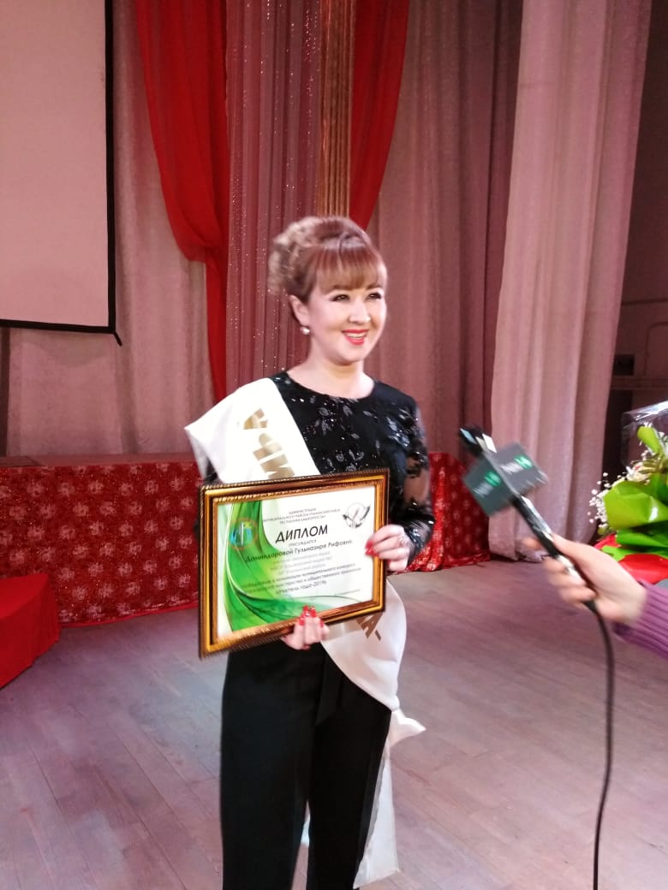

Обо Мне Родилась в Учалинском районе. Закончила Ильчинскую среднюю школу. Любимыми предметами были: русская и башкирская литература, родной и английский языки.
Поступила в Сибайский институт БГУ в 2006 году. В студенческие годы посещала кружок юных талантов " Тамсылар ". Любила писать стихи и небольшие рассказы. Также как и в школе, участвовала на конкурсах юных сказителей народного эпоса " Урал батыр".
Темой моей дипломной работы стала " Сравнение английских, русских и башкирских поговорок о зле и добре". Меня всегда волновали такие вечные вопросы. Окончив институт, приступила к работе в школе. Свою профессию люблю и получаю вдохновение от работы с детьми. Они дарят море положительных эмоций, и я счастлива видеть их улыбчивые лица каждый день.
Поступила в Сибайский институт БГУ в 2006 году. В студенческие годы посещала кружок юных талантов " Тамсылар ". Любила писать стихи и небольшие рассказы. Также как и в школе, участвовала на конкурсах юных сказителей народного эпоса " Урал батыр".
Темой моей дипломной работы стала " Сравнение английских, русских и башкирских поговорок о зле и добре". Меня всегда волновали такие вечные вопросы. Окончив институт, приступила к работе в школе. Свою профессию люблю и получаю вдохновение от работы с детьми. Они дарят море положительных эмоций, и я счастлива видеть их улыбчивые лица каждый день.
"Искусство обучения - это искусство пробуждения в юных душах любопытства и дальнейшее его удовлетворение."
Анатоль ФранцМОИ ДОСТИЖЕНИЯ
Новости
Обучение
Topic: HogmanayСемь чудес светаИспользование скороговорок и стишков на уроке английского языкаКак написать бизнес письмоСовременный урок иностранного языкаСингапурская методикаВидеоурок. Глагол "to be" в настоящем времени Фрукты на английском языке. Видеоурок.Овощи на английском языке. Видеоурок.Местоимение. Видеоурок.Видеоурок. Важные глаголыЦвета на английском языке. Видео.